| Type of Bear | Rating |
|---|---|
| Panda | 9.8 |
| Polar bear | 9.4 |
| Brown bear | 6 |
| Black bear | 8 |
| Sun bear | 9 |
| Sloth bear | 10 |
Josh Oliver's tribute to bears.
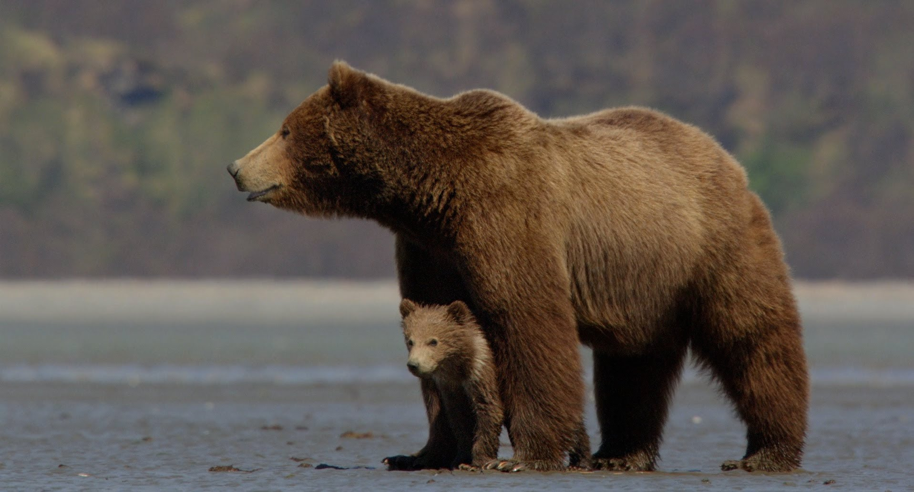
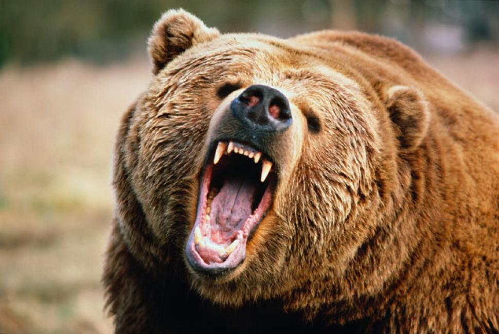
 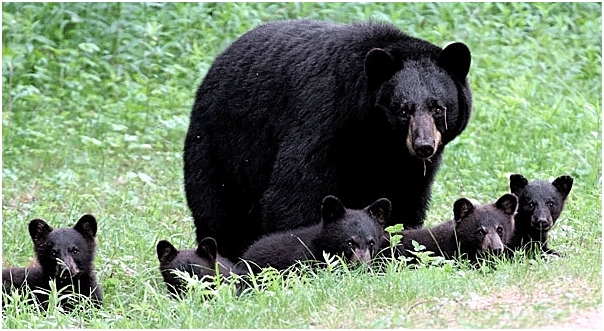
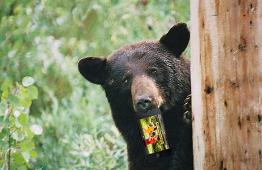
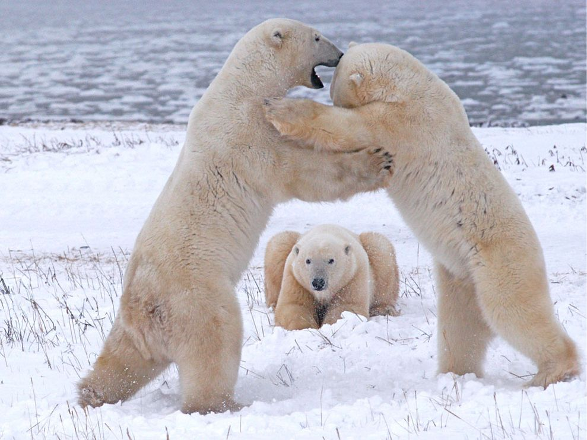
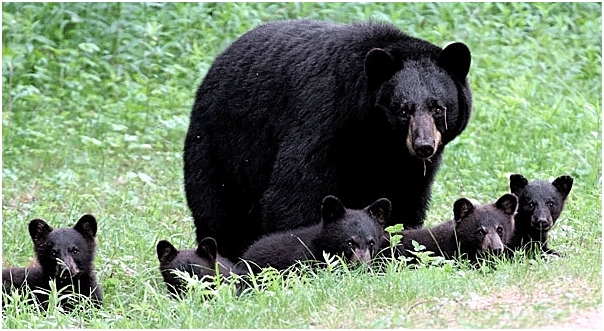
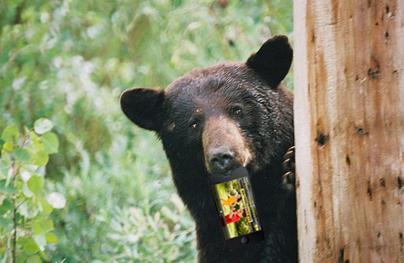
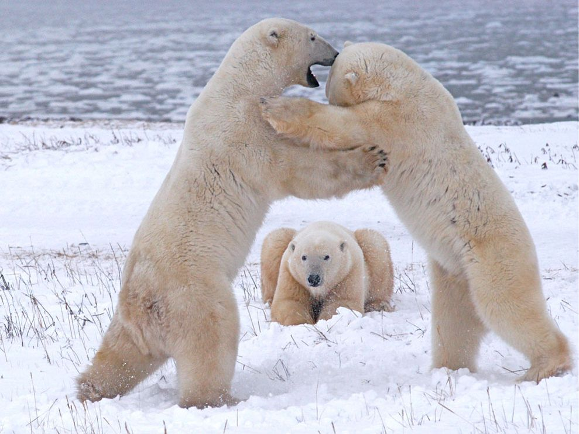

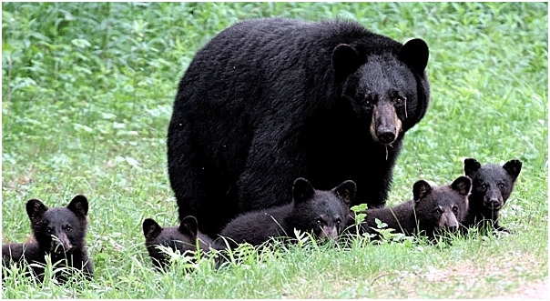
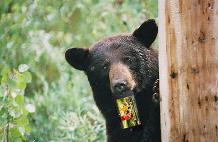
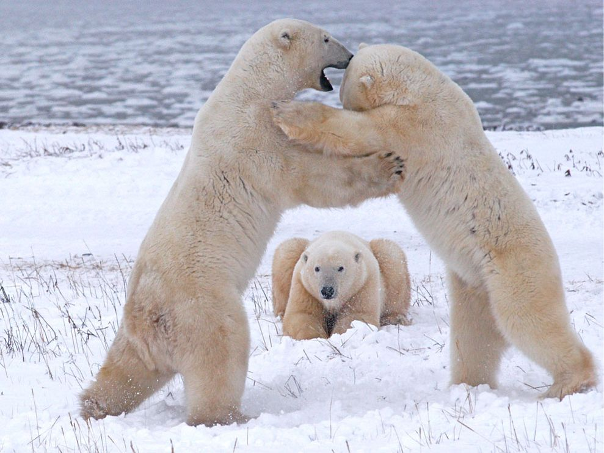
Bears are mammals of the family Ursidae. Bears are classified as caniforms, or doglike carnivorans, with the pinnipeds being their closest living relatives. Although only eight species of bears are extant, they are widespread, appearing in a wide variety of habitats throughout the Northern Hemisphere and partially in the Southern Hemisphere. Bears are found on the continents of North America, South America, Europe, and Asia. Common characteristics of modern bears include large bodies with stocky legs, long snouts, shaggy hair, plantigrade paws with five nonretractile claws, and short tails. While the polar bear is mostly carnivorous, and the giant panda feeds almost entirely on bamboo, the remaining six species are omnivorous with varied diets. With the exception of courting individuals and mothers with their young, bears are typically solitary animals. They are generally diurnal, but may be active during the night (nocturnal) or twilight (crepuscular), particularly around humans. Bears possess an excellent sense of smell and, despite their heavy build and awkward gait, are adept runners, climbers, and swimmers. In autumn, some bear species forage large amounts of fermented fruits, which affects their behaviour.[1] Bears use shelters, such as caves and burrows, as their dens; most species occupy their dens during the winter for a long period (up to 100 days) of sleep similar to hibernation.[2] Bears have been hunted since prehistoric times for their meat and fur. With their tremendous physical presence and charisma, they play a prominent role in the arts, mythology, and other cultural aspects of various human societies. In modern times, the bears' existence has been pressured through the encroachment on their habitats and the illegal trade of bears and bear parts, including the Asian bile bear market. The IUCN lists six bear species as vulnerable or endangered, and even least concern species, such as the brown bear, are at risk of extirpation in certain countries. The poaching and international trade of these most threatened populations are prohibited, but still ongoing.
Very informitive. - Brandon Guild
So Great. - Brandon Guild
The best website ever made. - Brandon Guild
My new hompage. - Brandon Guild